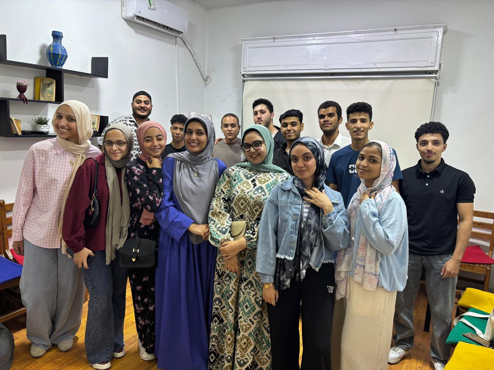
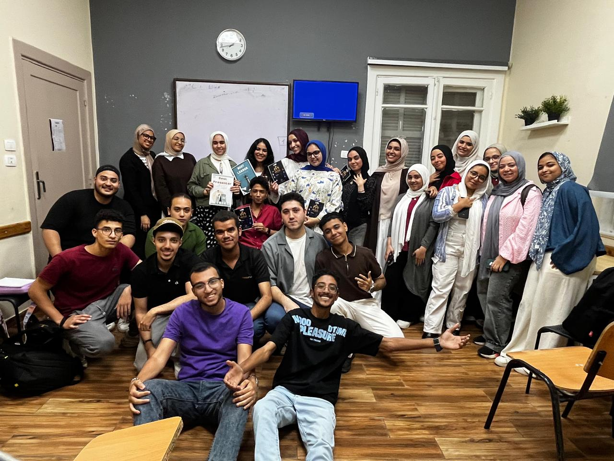

A small page to mark the last day — for everyone who showed up, tried, asked questions, and stayed until the very end.
Somewhere between the first nervous question and the last confident answer, something quietly happened. Ideas that once felt foreign became familiar. Faces that were strangers on day one became the people you looked for in the room. That's not a small thing — that's the actual shape of learning.
This course was never really about the syllabus. It was about showing up again and again, even on the days it felt slow, even when it felt hard, and choosing to keep going anyway. Whatever you carry forward from here — a skill, an idea, a friendship, or simply the proof that you can finish what you start — it's yours now. No one can take it back.
So today isn't really an ending. It's just the last page of one chapter, written well.
With gratitude, for every hour spent here.

